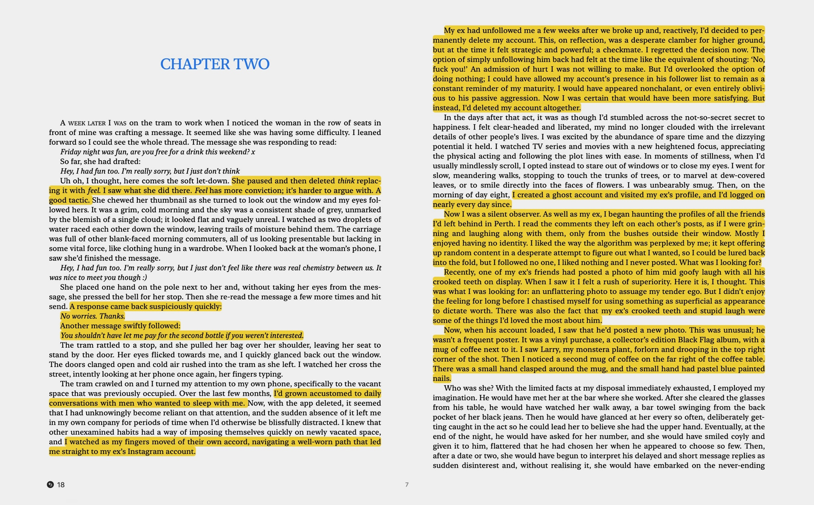
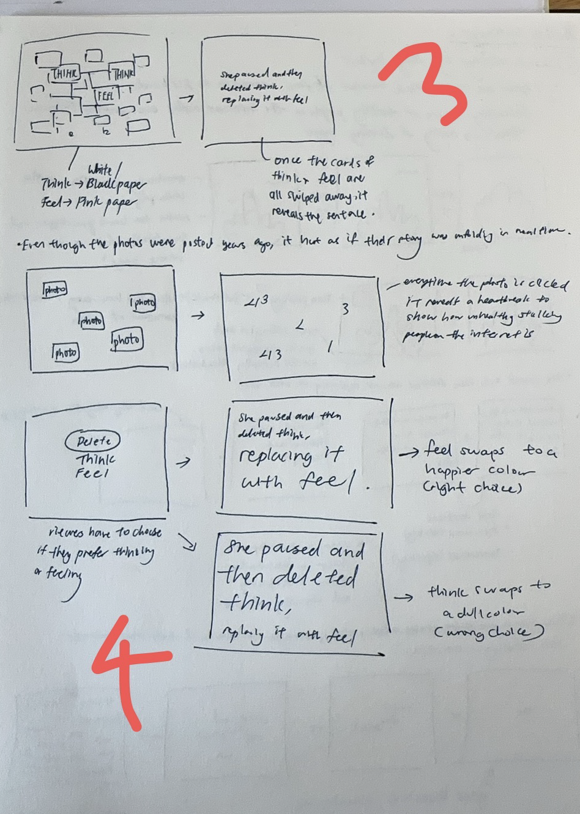
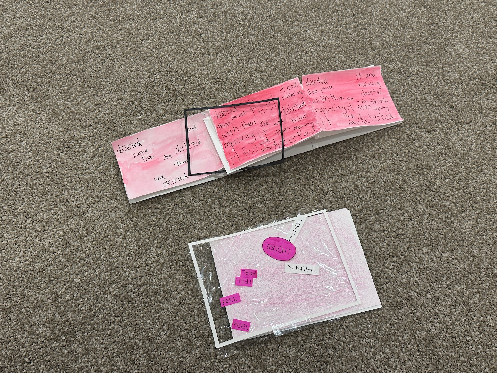

We were given time over the week to choose from one of the given texts, or find our own, that was related to digital media. I wanted to find one of my own text, as I felt that I would be able to create better designs if I connected with it emotionally.
After some research, I landed on the book “Search History” by local Melburnian author, Amy Taylor. If one based entirely off the summary of the book, it would not really relate well to the theme of digital media, as it is mainly about a woman’s retroactive jealousy with her current boyfriend’s dead girlfriend. However, I found it interesting how her unhealthy habits were exacerbated by digital media, something I feel that many people can relate to, even if it might be different varieties of habits.
I eventually landed on the sentence, “She paused and then deleted "think"" replacing it with "feel”. I was contemplating between this and another sentence in the book where the speaker was unhealthily comparing herself to her partner’s ex due to her incessant stalking. However, I felt that this sentence relates to a wider variety of audience, both male and female. In today’s age where texting is such a large part of everyone's lives, everyone has come to place overtly fixed connotations on various words, leading to unnecessary stressing when texting others. So much meaning has been placed onto small aspects such as using a full stop or capital letters, leaving someone on delivered or replying immediately, that it pushes one to question; why has this become the new norm?

Winnie Soon, Unerasable Characters II, ACCA, 2023
More p5.js
Caption for the video
var SIZE;
var xPos, yPos;
function setup() {
createCanvas(windowWidth, windowHeight);
background(0);
textAlign(CENTER, CENTER);
//centered horizontally and baselined
SIZE=80;
xPos=width/2
yPos=height/2;
frameRate(5);
angleMode(DEGREES);}
function draw() {
background(0, 25);
//background (0) refreshes the frame
so that it doesn't overlap
if (mouseIsPressed === true){
fill(255);
}else{
fill(255, 0, 0);
}
textSize(SIZE);
push();
translate(width/2, height/2);
noStroke();
rotate(mouseX);
text('HELLO WORLDDDD\n
this is the end... ', -width/4,
-height/4, width/2, height/2);
//first two variables are position,
second two are size
pop();
stroke(255, 0, 0);
strokeWeight(5);
line(mouseX, mouseY, pmouseX, pmouseY);
}
function mousePressed(){
SIZE+=10;
}
In the second half of class, we worked with more complicated p5.js commands.
We had previously learnt how to place images into a HTML file, but today we were taught another way through p5.js,
where we directly dragged it into the screen of Processing.
Today's “Hour of Code” was extremely overwhelming, as there was a lot of math and new concepts involved.
We learnt about using angles, Boolean systems and conditional statements, as seen in the following code.
While it was difficult, it opened up more ideas for Brief 1, as what I could previously think of doing was very limited.
Caption for the video
Sketches
One source of inspiration that I have constantly been referencing during my ideation would be the Reading Machines website. It is easy to jump to using images and complicated graphics when coming up with a website design, as I rarely see websites without photographs or videos in today's day and age. Thus, it was helpful to reference a website where everything was entirely text-based, as well as poetry-based.
One design that I was especially inspired by was “Glossary of Feelings” by Jorge Palacios. The idea of clicking and dragging individual text trapped within a rectangle was such a simple idea, yet did not occur to me. I thought it might be an interesting element to split up the sentence I am using, or even to highlight certain keywords. Another design I was inspired by would be Angelo Plessas' “Everything Happens As It Should” from last week. The concept of a changing background colour with each user interaction might be something I want to try.
Winnie Soon, Unerasable Characters II, ACCA, 2023

Winnie Soon, Unerasable Characters II, ACCA, 2023
Sentence decreases in size and by a word everytime the left key is pressed, while it increases again and adds a word whenever the right key is pressed. The purpose was
to mimic the deleting and retyping we do whenever we are texting someone.
Each time “ENTER” is pressed, the next word in the sentence is randomly added to anywhere on the screen, while the opposite happens when “BACKSPACE” is pressed.
“THINK” and “FEEL” will be blocked out with a black and pink rectangle respectively. Viewers have to swipe the stack of rectangles as though they are pieces of paper, to unveil the final sentence at the bottom of it. This was heavily inspired by Palacios' “Glossary of Feelings”.
Viewers have to choose whether they want to delete the word “THINK” or “FEEL”. The background and text will correspond to whichever option they choose, with “THINK” producing a more neutral background, and “FEEL” a more pink background.
Mini Prototoypes
1. The screen starts out with just the first word, with each next word multiplying itself and increasing the tint of the background, until eventually the screen is hot pink and filled with repetitions of the sentence.
2. Each time a word, “THINK” or “FEEL” is clicked, the word disappears until only one type of word is left. The background will also switch according the majority text left, with a pink background for “FEEL” and white one for “THINK”, before revealing the final sentence.
I chose to do the second idea for my final prototype as it was more interactive compared to the first one. It might be a little harder to code but I want to challenge myself.

Winnie Soon, Unerasable Characters II, ACCA, 2023Caption for the video
Final Prototype
Winnie Soon, Unerasable Characters II, ACCA, 2023
For the final prototype, I connected fishing wire to each word, so that I could easily remove it when interacted with. The cling wrap provided a separating layer so that the words would not change position whenever the background was being moved. However, for the final code, there will not be such a reflective layer and is purely for prototyping purposes.